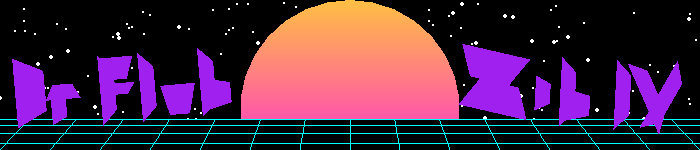
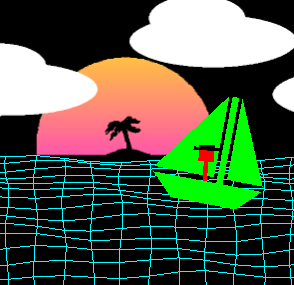
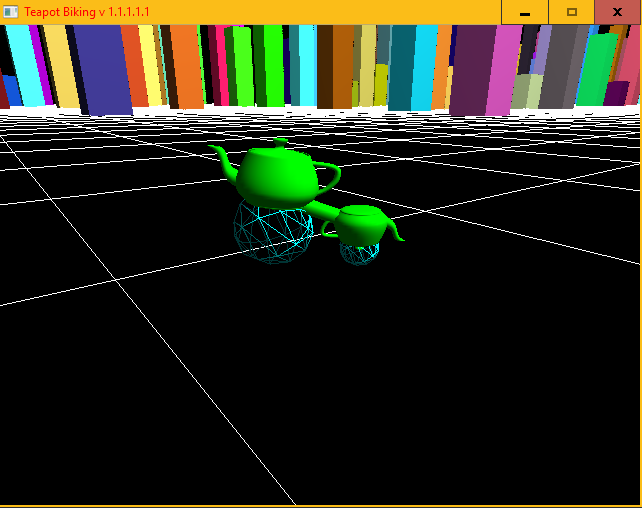
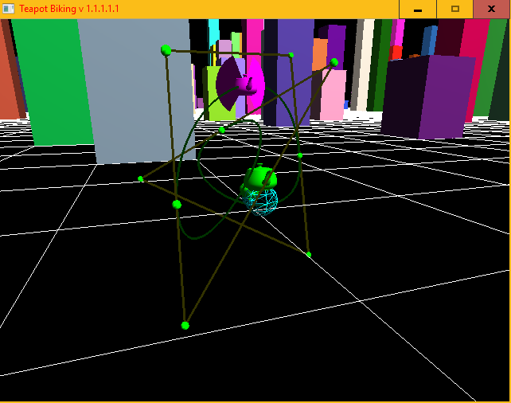

CSCI 441 - Computer GraphicsFall 2018 |
|
| | Home | Syllabus | Assignments | Leaderboard | Schedule | Resources | | |
Dr Flubelious Zibuitz IVThis is a banner which pulls elements from the home world of Dr. Flub Zib IV. He lives in hackerspace where all you need is a jamming 80's soundtrack to hack into anything. The Sun is generated with a fanned triangle "circle" where the color is set according to the angle of triangle currently being drawn. The stars are procedurally generated by drawing small fan circles, this randomness is seeded so that the same results are observed every time. The sea is drawn with a black rectangle and cyan lines overlayed. These lines Are procedurally generated by keeping the Y intercepts the same, but changing the X intercept with an angle proportional to the distance from the center of the image. BIOATSTo travel around hackerspace, Dr. Flub Zib uses the BIOATS: Basic Input/Output And Transportation System. This allows him to hack far and wide to places unknown. The Ocean is precedurally generated and animated in real time using a math formula involving lots of sine waves. The BIOATS rocks back and fourth as it travels through the waves. Dr. Flub Zib stays mostly steady when traveling at sea, but sways with the boat slightly The background details were freedrawn in MS paint. ERROR 418: I AM A TEAPOT This is the teapot bike. In hackerspace, teapots are the primary for of land transportation as they leaf hackers many options for Utah related festivities.  This is a friend that was aquired along the way. It's talents are calculating the mathmatics of bezier curves and baking. | |